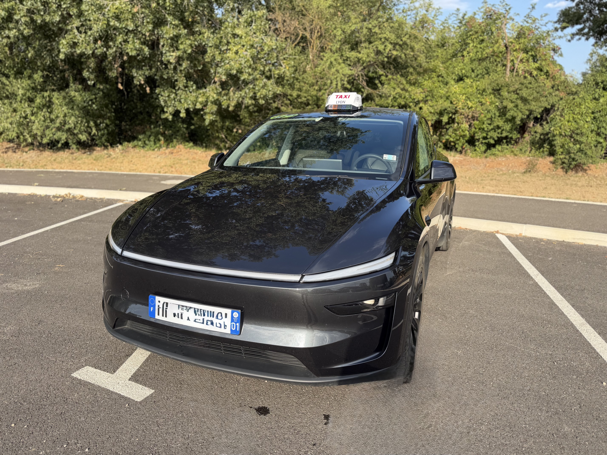

TAXI GRAY vous accompagne depuis Châtillon-la-Palud, Ambérieu-en-Bugey et les communes voisines.
🚉 Gares & aéroports
🏥 Taxi conventionné CPAM
💼 Déplacements professionnels
Transport vers les gares d’Ambérieu-en-Bugey, Meximieux et les correspondances régionales.
Transferts vers Lyon-Saint-Exupéry, Genève et toutes destinations.
Transport médical conventionné CPAM sur prescription médicale.
Déplacements professionnels et trajets toutes distances.
Un véhicule confortable et adapté à vos déplacements dans l’Ain.



Merci à nos clients pour leur confiance. Découvrez les avis Google de TAXI GRAY.
⭐ Voir les avis GoogleBasé à Châtillon-la-Palud, TAXI GRAY intervient rapidement pour tous vos déplacements dans l'Ain.